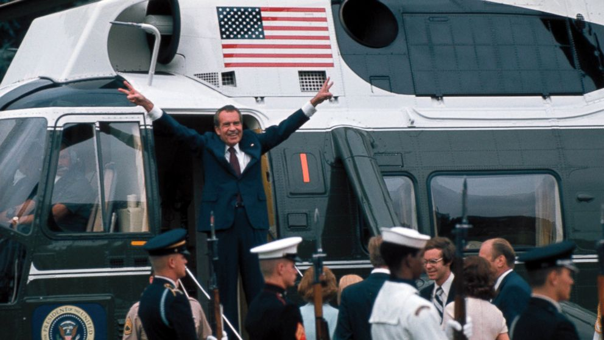

The Watergate Chronology
The Watergate Break-In
June 17, 1972
Security guard Frank Wills found tape on a door latch at the Watergate complex and called the police. Five men were arrested inside the Democratic National Committee headquarters, carrying surveillance equipment and documents linking them to Nixon's re-election committee, CREEP.
Nixon Orders the Cover-Up
June 23, 1972
Just six days after the break-in, Nixon told Chief of Staff H.R. Haldeman to have the CIA tell the FBI to stop the Watergate investigation. This conversation was recorded on Nixon's own taping system. When it was finally released in 1974, it proved obstruction of justice and immediately ended his presidency.
Nixon Wins a 49-State Landslide
November 7, 1972
Nixon won re-election with 520 electoral votes and 60.7% of the popular vote. The central irony of Watergate: he was going to win easily regardless. Every crime that destroyed his presidency was completely unnecessary.
"A Cancer on the Presidency"
March 21, 1973
White House counsel John Dean warned Nixon: "We have a cancer within, close to the presidency, and it is growing daily." Nixon's response on tape was to discuss how to sustain the cover-up, not end it, including finding a million dollars in hush money.
The Taping System Is Revealed
July 16, 1973
Former White House aide Alexander Butterfield told Senate investigators that Nixon had a secret voice-activated recording system installed in 1971. Every Oval Office conversation had been recorded automatically, and the battle over those tapes became the final phase of the scandal.
The Saturday Night Massacre
October 20, 1973
Nixon ordered Attorney General Elliot Richardson to fire Special Prosecutor Archibald Cox. Richardson refused and resigned. Deputy AG William Ruckelshaus also refused and was fired. Within 48 hours, 300,000 telegrams flooded Congress, the most in congressional history, and impeachment became politically inevitable.
Supreme Court Rules 8 to 0
July 24, 1974
All eight participating justices, including Nixon's four appointees, unanimously ruled in United States v. Nixon that executive privilege cannot shield criminal evidence from a legitimate prosecution. The 8 to 0 vote left Nixon no room to maneuver.
"Neither the doctrine of separation of powers, nor the need for confidentiality, can sustain an absolute, unqualified presidential privilege of immunity from judicial process."Chief Justice Warren Burger, United States v. Nixon, 418 U.S. 683 (1974)
The Smoking Gun Tape Is Released
August 5, 1974
Complying with the Supreme Court order, Nixon released the June 23, 1972 transcript. Every Republican who had defended Nixon immediately reversed course. Senator Barry Goldwater told Nixon he had fewer than 15 Senate votes, not nearly enough to survive conviction.
Resignation and Succession
August 8 to 9, 1974
Nixon announced his resignation in a nationally televised address, becoming the only president in U.S. history to resign. He framed it as a political sacrifice and never admitted guilt. Gerald Ford was sworn in the next morning and declared: "Our long national nightmare is over."
"Our long national nightmare is over. Our Constitution works; our great Republic is a Government of laws and not of men."President Gerald R. Ford, inaugural remarks, August 9, 1974
What the Timeline Shows
What strikes me most looking at this timeline is that every time Nixon tried to shut down the investigation, it made things worse. Firing Cox produced 300,000 telegrams and made impeachment politically certain. Refusing to hand over the tapes forced a unanimous Supreme Court ruling against him. The cover-up caused far more damage than the original crime would have.
What is equally significant is that the institutions on the other side held. The Senate committee, Judge Sirica, the press, and the Supreme Court all refused to back down. The constitutional system worked, at enormous cost to the country's trust in government, but it worked.

Nixon departs the White House for the final time, August 9, 1974
Credit: National Archives, White House Photo Office Collection